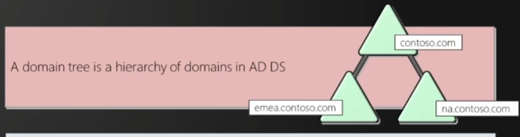

Phonebook for windows or Identity Management Tickets
Directory service developed by micrsoft to manage windows domain admin
Stores info related to objects such as computers, users, printers etc.
Authenticates using kerberos tickets
Non windows machine like linux and firewalls can also authenticate to AD via RADIUS(Remote Authentication Dial In User Service) or LDAP(Lightweight Direcotry access protocol)
Physical AD components
1) Domain Controller
Controls everything of a domain
It is a server with AD DS server role
Host a copy of AD AD(Active Directory Data Store)
Provides authentication and autorization services
Replicate updates to other domain controllers in domain and forest
Allows administrative access and manage user accounts
2)AD DS
Contains database files
Consists of NTDS.dit file
is stored by default is %SystemRoot%\NTDS
Accessible only through domain controller
Logical Components
1)Schema(RuleBook)
AD DS Schema defines every type of object that can be stored in directory
Enforces rules regarding object creation and configuration
Class Object : What object can be created in directory : eg, user, computers
Attribute object : Information that can be attached to the object : eg display name
2)Domain
Group and manage objects(user,computer) in organisation
Administrative boundires for applying policies to group of objects
Authntication and authorization boundry that provides a way to limit scope of accss to resources
3)Tree

Domain tree is heirarchy of domains in AD DS
All domains in a tree share
a)Contiguous namespace with parent domain(like subdomains)
b)Can have additional child domains
c)By default create 2 way transitive trust with other domains
4)Forest

Collection of one or more domain trees
Share common shcema
Share common configuration pattern
Enable trust between all domains in forest
Share enterprise admins and schema admin groups
5)Organisational Units(objects are inside OU)
OUs are AD containers than contain users, groups, computers and other OUs
OUs are used to
a)Represnt the organisation heirarchially and logically
b)Manage a collection of objects in a consistent way
c)Delegate permissions to admin groups of objects
d)Apply policies
6)Trusts
Mechanism that allows user to gain access to resources in another domain
All domains in forest trust all other domains in that forest
Trust can extend outside the forest